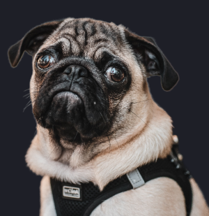
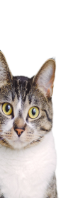
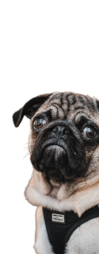
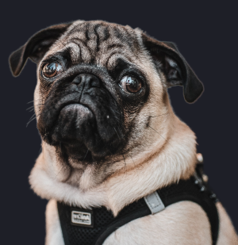
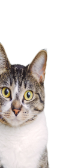
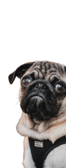

Forever Homes Shelter
Our mission is to rescue and provide rehabilitation to dogs and cats that are critically injured or neglected. We have already saved the lives of 10,000 animals. We are not just a rescue, we are a refuge.
Your Gift Helps Save Lives


 




